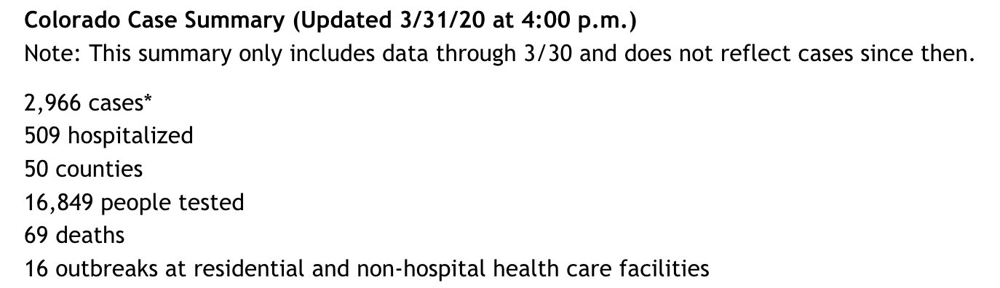
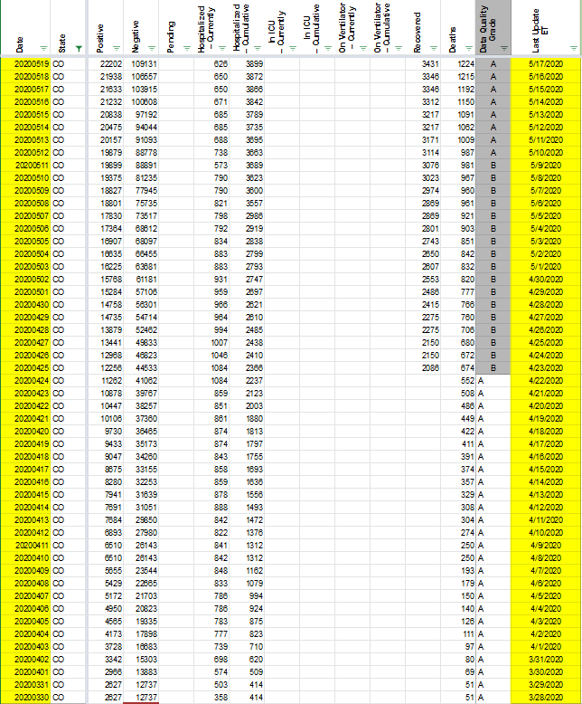
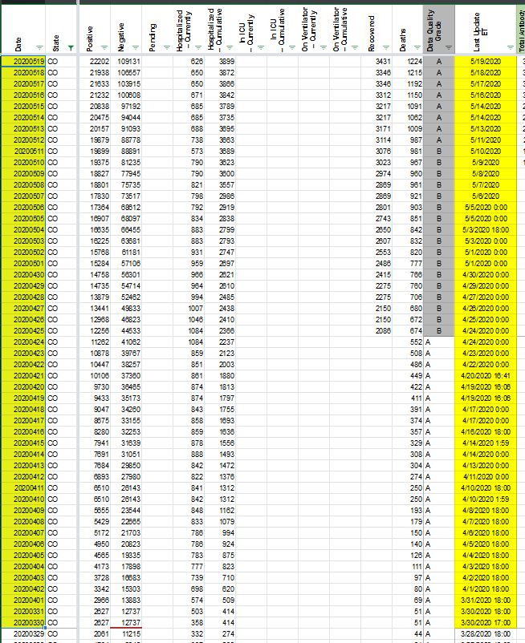

CO: Data integrity problem on March 31, 2020
This is the data from the Colorado website 
At least when I checked last night, the data from the Colorado website did not match what was on your website. It is still not corrected… The data listed in the 10:03PM screenshot is what should be used not the 4:02PM… But, it kind of depends how you want to define boundaries in days. If it is really 4:00 PM EDT, then most of your CO data is wrong since the reporting from CO usually occurs around 4:00PM MDT… And, for the data prior to yesterday, you were using the 4PM MDT values…
This issue has been automatically marked as stale because it has not had recent activity. It will be closed if no further activity occurs. Thank you for your contributions!
investigating
Hi @saewoonam
With our current publish shift times we often catch Colorado’s updates only two days later. We are considering changing the publish times to be able to cover states that update late. Until then, I have updated the lastUpdateEt for CO entries to reflect the time of the data.
I know it’s not a perfect solution, but I hope it can help somewhat.


Thanks for your contribution @saewoonam ! Can you please share more detail? What was the data integrity problem with the website?